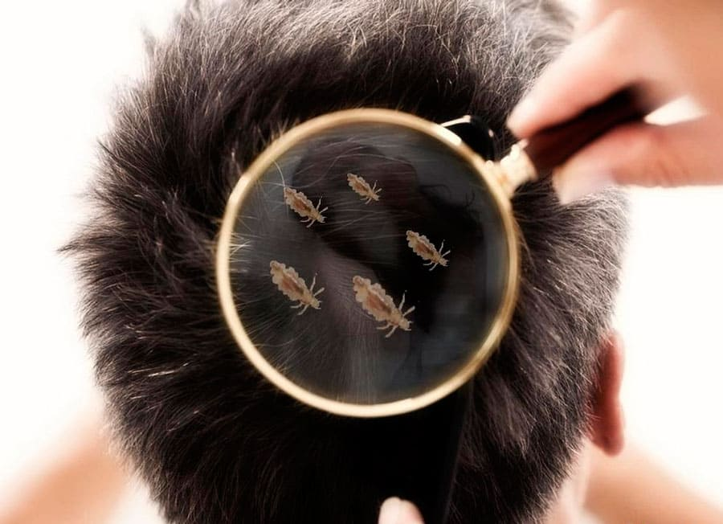
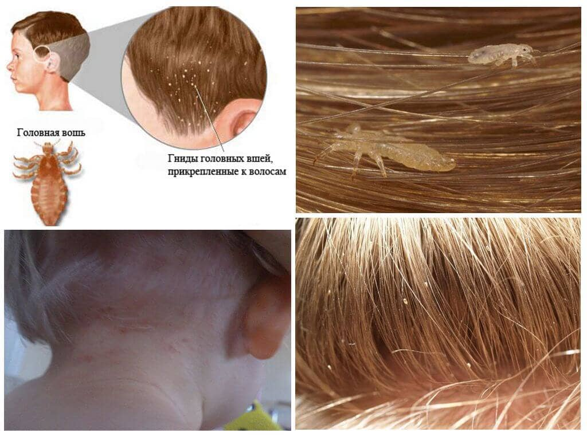
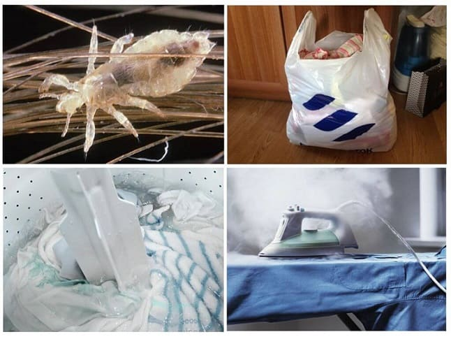
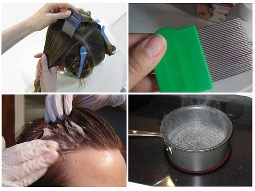
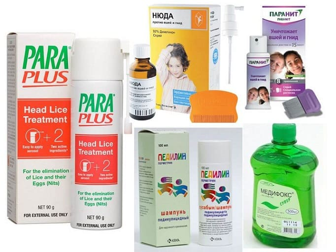

Педикулез (вшивость) – частая инфекционная болезнь у детей. Современные методы лечения позволяют избавиться от вшей за один-два нанесения препарата, без всяких страшилок, типа бритья наголо и сидения с пакетом на голове по получасу ежедневно

Вошь питается кровью хозяина несколько раз в день, при укусах в кожу попадают компоненты ее слюны и бактерии, это вызывает зуд кожи головы – главный симптом педикулеза. Вши ползают по коже головы, цепляясь за волосы – это вызывает неприятные ощущения в волосах зараженного, которые пугают и раздражают. Заражение вшами не только неприятно, без адекватного лечения оно может привести к вторичной кожной бактериальной инфекции.

Головные вши встречаются куда чаще, чем вам кажется. Ежегодно только по официальной статистике сотни тысяч российских детей заражаются вшами. Любой детский коллектив опасен вшами. Дети дошкольного и школьного возраста заражаются чаще всего и нередко заражают членов своих семей.
Взрослая вошь достигает размера 2–3 миллиметров (легко видна невооруженным глазом), по цвету коричнево-серая, с шестью лапками. Самка откладывает до 10 яиц в день: каждое яйцо она прикрепляет у корня отдельного волоса на высоте около 4 мм от кожи. Эти прикрепленные яйца называют гнидами; пока в гниде есть зародыш вши – она окрашена в цвет волоса и ее очень трудно заметить. Когда яйцо вылупится, гнида становится белой, хорошо заметна при осмотре (особенно в темных волосах), постепенно при расчесывании волос она движется все дальше от кожи и может обнаруживаться на любом участке волоса. Гниды, расположенные выше, чем 1 см от кожи головы, нежизнеспособны.
МИФЫ О ВШАХ
Риск заражения вшами почти не зависит от навыков гигиены ребенка, от длины его волос и прочих внешних факторов. Несмотря на это, факт заражения вшами обычно вызывает сильное порицание и брезгливость в обществе, что может наносить страдания как самому ребенку, так и его семье.
Когда родители приводят ко мне на прием детей, зараженных вшами, особенно подростков, они обычно сильно смущаются и стыдятся рассказывать об этом. Тогда я прежде всего стараюсь их успокоить и подбодрить, для этого рассказываю историю из своего детства, как я сам когда-то заразился вшами.
У нас в школе пару раз в год на уроках ОБЖ проводились учения про газовую атаку и ядерный взрыв. Там мы должны были 40 минут просидеть в подвале в противогазах, которые, разумеется, надевали то один, то другой класс, без всякой обработки. Вскоре после этих учений я стал ощущать, словно волосы сами по себе шевелятся, рассказал маме, и она нашла у меня вшей. Сельский фельдшер в то время не имела тех современных препаратов, которые сейчас назначаю я, поэтому она назначила какой-то малоэффективный препарат (возможно, это была Чемеричная вода, не помню), который нужно было втирать в волосы, затем полчаса сидеть с пакетом на голове, держа его руками для герметичности, а затем вычесывать гнид гребнем, а «опьяневших» недобитых вшей ловить ногтями и давить. Это были незабываемые две недели, во время которых меня пугали: мол, если и это не поможет – придется брить всю голову (чего я ужасно боялся). К счастью, до бритья не дошло, меня вылечили.
«Мой голову регулярно, а то вши заведутся», – говорила мне моя мама в детстве, и я верил и мыл.
Но, как вы уже поняли, это не помогло.
Такие мифы очень портят жизнь и добавляют чувства вины заболевшему и его семье. На самом деле сколь бы грязными ни были ваши волосы, вшами можно только заразиться от больного человека, вши не возникнут из грязи, сами по себе. И наоборот, как бы чисты ни были волосы, если вы будете «бодаться» с зараженным человеком, вы заразитесь педикулезом.
К слову, человек является единственным хозяином вшей. Вшами нельзя заразиться от кошки, собаки или других животных.
Самый частый вопрос родителей вшивого ребенка: «Ладно, ребенка мы вылечим, но у нас ведь теперь весь дом во вшах! Как же все вещи обработать?» Тут все просто. Вши обычно не могут выжить вне хозяина более 24 часов. Поэтому достаточно завернуть подушки в пакеты, выкинуть на балкон на 2–3 дня, и они будут незаразными.

Обтянуть диван широкой целлофановой пленкой на пару дней, и он не опасен. Осмотреть всех членов семьи, обработать голову заболевшим и всем вместе дружно уехать из квартиры к бабушке на две ночи, и вся квартира обеззаражена. И вовсе не нужно заливать весь дом химикатами из брандспойта или сжигать ковры напалмом.
Узнав, что уважаемый и опрятный доктор в детстве тоже это пережил, семья (особенно подростки) приободряется, и дальше разговор идет куда легче.
Ко мне нередко приводят детей из дорогих частных школ и детских садов, и родители таких детей удивляются, возмущаются и стесняются от этого еще сильнее. Но повторюсь: любой детский коллектив опасен вшами. Да, наверное, в детсадах и школах, где обучаются дети из малообеспеченных семей, семей с низкими навыками гигиены, вероятность заражения вашего ребенка немного выше. Но у этого есть и обратная сторона. Малообеспеченные семьи спокойно относятся к регулярным осмотрам волос у детей медработниками, в то время как семьи с высоким достатком, посещающие «элитные» учебные заведения, встречают недоумением, протестом и даже театральным скандалом сами попытки осмотра волос в классе. Это приводит к снижению настороженности против педикулеза и к возрастанию риска (если кто-то все же принесет вшей в такую школу, они будут замечены не сразу).
Вши не прыгают и не летают, они могут только ползать. Поэтому основной способ заражения – прижимания головы к голове (объятия, «бодание» и т. д.). Иногда вши передаются при пользовании общей расческой, резинкой для волос или шапкой зараженного человека.
Вши быстро уползают в гущу волос от света, поэтому обнаружить живую вошь на голове бывает затруднительно. Обычно легче найти гниды или живых особей на затылке или за ушами.
ВАЖНО:
диагноз педикулеза нельзя ставить только на основании обнаружения гнид; доказано, что при таком подходе 2/3 детей получат лечение, без которого можно было обойтись.
Для подбора оптимального препарата против вшей обратитесь к вашему педиатру. Лекарственные препараты против педикулеза делятся на два основных вида: первый блокирует нервную систему вшей, а второй препятствует их дыханию.
Лекарственные препараты не рекомендуется использовать профилактически, их следует наносить, только если заражение доказано (в волосах найдены живые особи вшей).
В последнее время опубликовано много сообщений о растущей сопротивляемости вшей к препаратам, применяемым против них, но если препарат не работает, скорее всего, причина в том, что вы неверно его наносите, а не в устойчивости вшей к нему. Некоторые специалисты рекомендуют удалять гниды с волос частым гребнем после обработки препаратом, но это не обязательно.

Почти все препараты против вшей разрешены с 1–3 лет, но у детей более раннего возраста вывести вшей весьма просто чисто механическими способами: отловом вшей и вычесыванием гнид. Большинство семей с нормальной гигиеной замечают педикулез у ребенка, когда у него всего несколько вшей и пара десятков гнид, – такое количество вполне реально убрать «в ручном режиме». На крайний случай всегда есть запасной вариант: стрижка малыша наголо. До трех лет это обычно не доставляет больших неудобств.
Препарат против вшей наносится на волосы минимум двукратно с интервалом 9 суток. Первое применение убивает всех живых вшей, кроме личинок в гнидах. Девять дней спустя (а не семь, как рекомендуют некоторые производители!) второе нанесение убивает всех недавно вылупившихся вшей, которые не были убиты при первом применении

(гниды весьма устойчивы к препаратам). Если второе нанесение сделать через 7 дней, то часть гнид еще не успеет вылупиться и переживет оба нанесения лекарства.
Полностью предотвратить заражение вшами нелегко, особенно у маленьких детей, посещающих детские учреждения. Но вы вполне можете свести риск к минимуму очень простыми советами:
а) научите ребенка избегать контакта «голова к голове» с другими детьми;
б) научите не пользоваться чужими расческами, чужими резинками для волос, чужими головными уборами;
в) научите не давать в пользование свои принадлежности для волос (выбрасывать, если кто-то ими воспользовался);
г) научите ребенка избегать хранения одежды в общих шкафах.
Своевременное выявление и лечение зараженных детей в детских коллективах также очень важно для профилактики распространения педикулеза.
(Сергей Бутрий "Здоровье ребенка: современный подход")